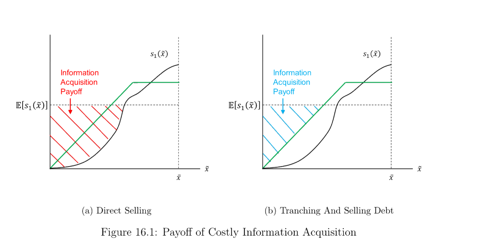

16. Liquidity
本章主题：流动性。 「流动性」= 在基本价值实现前回收它的能力（项目末值 \(w\)、早期估值 \(a
Chapter theme: liquidity. "Liquidity" = the ability to recover fundamental value before it is realized (project end value \(w\), early valuation \(a
16.1 Demandable Deposit as Commitment Device: Diamond and Rajan (2001)
基本思想：在企业家无法承诺「不重新谈判」的不完全合约下，正 NPV 项目可能无法融资；但银行可通过提供脆弱（可挤兑）的活期存款作承诺装置，使重新谈判永不发生，家庭因而愿为高效投资而存款 → 更高流动性。脆弱性创造流动性。
16.1.1 设定. 三期 \(t=0,1,2\)，零贴现。三类风险中性主体：
- 借款人：零财富，\(t=0\) 需投资 \(I=1\)；有专用人力资本，\(t=1\) 产 \(C_1=0\)、\(t=2\) 产 \(C_2=1.6\)；拥有全部讨价还价能力。
- 银行家：\(t=0\) 财富 1；以概率 \(\theta\) 受流动性冲击变得不耐心（更看重 \(t=1\) 消费），以 \(1-\theta\) 等同看重；可在 \(t=1\) 清算项目得 \(X_1=0.9\) 或 \(t=2\) 得 \(X_2=1.2\)。
- 连续统的无技能家庭：禀赋充足；只能在 \(t=2\) 自行回收 \(\beta X_2\)（\(\beta\in(0,1)\)，数值例 \(\beta=0.5\) 故 \(\beta X_2=0.6\)）。\(\beta<1\) 体现银行家比家庭更能榨出价值。
16.1.2 银行家的流动性. 若银行家不受冲击，项目对他值 \(X_2=1.2\)（企业家全部谈判力 → 付银行家其外部选择 \(X_2\)）。若受冲击：\(t=1\) 清算得 \(X_1=0.9\)；\(t=1\) 把项目贷款卖（或抵押借）给家庭，仅值 \(\beta X_2=0.6\)（家庭只能自行回收 \(0.6\)；即使银行家承诺 \(t=2\) 代家庭谈到 \(1.2\) 也无法承诺——\(t=2\) 必重谈到只给家庭 \(0.6\)）。故非流动性（$0.6<1.2$）源于缺乏承诺，流动性溢价 \(\frac1\beta-1=1\)。于是银行家受冲击即清算（低效），蛋糕从 \(1.6\) 缩到 \(0.9\)。事前投资不足：银行家期望支付 \(\theta\times0.9+(1-\theta)\times1.2\)，若 \(\theta\) 足够大则 $<1$，使其 \(t=0\) 不愿投资。
用活期存款作承诺装置创造流动性：银行家受冲击时可向家庭发可挤兑（先到先得）的活期存款借款。\(t=2\) 支付被承诺：若银行家试图调低对储户的支付，储户立即排队挤兑；银行无现金 → 项目被家庭接管，银行家拿不到任何租金（其任何报价都可被企业家直接报价匹配）→ 一旦挤兑银行家收益为零，故他根本不会试图重谈。承诺意味着银行家可在 \(t=1\) 凭活期存款借到 \(X_2=1.2\)，流动性冲击被完全保险掉。
Remark 16.1 银行家的价值来自威胁生产 \(X_2\)，而非真正生产 \(X_2\)。只要银行家保持以外部选择 \(X_2=1.2\) 威胁的能力，企业家至少付出 \(1.2\)，使事前投资可行、经济不受投资不足之苦。然而为效率计，银行绝不应真的生产 \(X_2\)。
16.1.3 替代融资：储户的流动性. 反过来，设储户各受异质流动性冲击（\(t=1\) 变得不耐心）、银行家 \(t=1\) 无财富。银行家 \(t=0\) 须从家庭筹 \(I=1\) 投于企业家的项目。活期存款（面值 1）为储户提供 \(t=1\) 流动性：无挤兑则银行家 \(t=2\) 赚正租金 \(X_2-1=0.2\)；若曾重谈则挤兑、银行家归零，故从不重谈 = 承诺。因而存款终值确定为 1，任何不耐心家庭都可在 \(t=1\) 提取、被新的耐心家庭替换。结论：中介的脆弱结构提供「不重谈」的承诺 → 给存款完美流动性，经济实现最高福利。
Basic idea: under an incomplete contract where the entrepreneur cannot commit to no renegotiation, a positive-NPV project may not be financed; but the bank can offer a fragile (runnable) demandable deposit as a commitment device so renegotiation never happens, and households deposit for efficient investment → higher liquidity. Fragility creates liquidity.
16.1.1 Setup. Three periods \(t=0,1,2\), zero discount. Three risk-neutral agents:
- Borrower: zero wealth, needs \(I=1\) at \(t=0\); special human capital, produces \(C_1=0\) at \(t=1\), \(C_2=1.6\) at \(t=2\); has all the bargaining power.
- Banker: wealth 1 at \(t=0\); with probability \(\theta\) hit by a liquidity shock (becomes impatient, cares more about \(t=1\) consumption), with \(1-\theta\) cares equally; can liquidate the project for \(X_1=0.9\) at \(t=1\) or \(X_2=1.2\) at \(t=2\).
- Continuum of unskilled households: enough endowment; can recover only \(\beta X_2\) themselves at \(t=2\) (\(\beta\in(0,1)\), \(\beta=0.5\) so \(\beta X_2=0.6\)). \(\beta<1\) reflects the banker being more capable of squeezing value out than households.
16.1.2 Liquidity for the banker. If not shocked, the project is worth \(X_2=1.2\) to the banker (entrepreneur all bargaining power → pays the banker his outside option \(X_2\)). If shocked: liquidate at \(t=1\) for \(X_1=0.9\); sell the project loan (or borrow against it) to households at \(t=1\) for only \(\beta X_2=0.6\) (households recover only \(0.6\); even if the banker promises to bargain to \(1.2\) at \(t=2\) he cannot commit — at \(t=2\) he will surely renegotiate down to \(0.6\)). So illiquidity ($0.6<1.2$) results from lack of commitment, with a liquidity premium \(\frac1\beta-1=1\). So the banker liquidates once shocked (inefficient), shrinking the pie from \(1.6\) to \(0.9\). Ex-ante under-investment: the banker's expected payoff \(\theta\times0.9+(1-\theta)\times1.2\), which if \(\theta\) is large enough is $<1$, preventing investment at \(t=0\).
Creating liquidity with a demandable deposit as commitment device: when shocked, the banker can borrow from households by issuing a runnable (first-come-first-serve) demandable deposit. The \(t=2\) payment is committed: if the banker tries to renegotiate down, depositors immediately queue to withdraw; the bank has no cash → the project is taken over by households, and the banker earns no rent (any offer is matched by the entrepreneur's direct offer) → once a run happens the banker has zero payoff, so he never even tries to renegotiate. Commitment lets the banker borrow up to \(X_2=1.2\) at \(t=1\), fully insuring the liquidity shock.
Remark 16.1 The banker's value comes from threatening to produce \(X_2\), not from actually producing \(X_2\). As long as the banker keeps the ability to threaten with the outside option \(X_2=1.2\), the entrepreneur pays at least \(1.2\), making investment feasible ex-ante so the economy doesn't suffer under-investment. But for efficiency, the bank should never actually produce \(X_2\).
16.1.3 Alternative financing: liquidity for depositors. Conversely, suppose depositors each face an idiosyncratic liquidity shock (impatient at \(t=1\)) and the banker has no wealth at \(t=1\). The banker raises \(I=1\) from households at \(t=0\) for the entrepreneur's project. A demandable deposit (face value 1) provides \(t=1\) liquidity: with no run, the banker earns a positive rent \(X_2-1=0.2\) at \(t=2\); if he ever renegotiates, a run happens and the banker is left with zero, so he never renegotiates = commitment. Hence the deposit has a final payoff of 1 for sure, and any impatient household can withdraw at \(t=1\) and be replaced by a fresh patient one. Conclusion: the fragile structure of the intermediary provides a commitment of no renegotiation → giving the deposit perfect liquidity, and the economy realizes its highest welfare.
16.2 Lend to Firms Under Shocks: Holmstrom and Tirole (1998)
这是 Diamond-Dybvig (1983) 的公司版。D-D 中风险厌恶消费者面临流动性冲击想平滑消费、保险有价值（关键是效用凹性）；Holmstrom-Tirole (1998) 中所有主体风险中性，企业面临流动性冲击，若 1 美元对受冲击企业的边际价值 $>1$（因不可质押收益 \(C\)），则跨企业的流动性保险对企业有价值。
16.2.1 设定. 三期 \(t=0,1,2\)，零贴现。两种储蓄技术：短期无风险（存 1 下期得 1）、长期无风险（\(t=0\) 存 1，\(t=2\) 得 \(R>1\)）。三类风险中性主体：投资者（各 \(t=0\) 财富 \(1+\rho\)）、银行家（\(t=0\) 零财富）、大量企业（各 \(t=0\) 零财富）。企业项目：\(t=0\) 需投资 \(I=1\)；\(t=1\) 以概率 \(p\) 遭 i.i.d.、可观测可验证的流动性冲击，需再投 \(\rho\) 才能续命（不投则 \(t=2\) 收益消失）；\(t=2\) 以概率 \(\pi\) 付 \(X+C\)、以 \(1-\pi\) 付 0（\(X\) 可质押给市场、\(C\) 不可质押的私利）。续命有效率但不可行：\(\pi(X+C)>\rho\)（社会上应续命），但 \(\pi X<\rho\)（投资者在冲击后不愿贷，即使发最高优先级新债也无法融到 \(\rho\)）。
16.2.2 自给自足（现金储蓄）. 企业知冲击后筹不到 \(\rho\)，故 \(t=0\) 向一个投资者筹 \(1+\rho\)、投 1 入项目、把 \(\rho\) 存短期技术。投资者 \(t=0\) 的参与约束：
$$(1+\rho)R\le\pi X+\underbrace{(1-p)\rho}_{\text{excess borrowing}} \tag{16.1}$$
满足 (16.1) 则自给可行，但低效——多借的 \(\rho\) 全投短期、放弃了长期更好回报 \(R\)，每企业期望浪费 \((1-p)\rho(R-1)\)。
16.2.3 银行提供异质流动性保险. 企业改向银行借、银行向所有投资者筹钱、收流动性溢价并为所有企业保险。银行向每企业收 \(p\rho\) 作流动性风险溢价（为每企业筹 \(1+p\rho\)），所有企业 \(t=2\) 欠银行 \((1+p\rho)R\)；\(t=1\) 任何受冲击企业可免费从银行得 \(\rho\)（冲击可观测可验证 → 无假报）。需要银行居中，因投资者无承诺（各只投一家、企业受冲击时会把 \(\rho\) 揣兜里）。银行（代投资者）的参与约束：
$$(1+p\rho)R\le\pi X\ \Rightarrow\ (1+\rho)R\le\pi X+\underbrace{(1-p)\rho R}_{\text{excess borrowing}} \tag{16.2}$$
比较 (16.2) 与 (16.1)：银行保险下多借的 \((1-p)\rho\) 投于长期、生成 \((1-p)\rho R\)；自给下只生成 \((1-p)\rho\)。故银行保险通过避免把多余钱浪费在短期储蓄而提升效率。结论：银行因池化大量企业且有承诺，得以创造流动性。
16.2.4 总量流动性冲击下的政府货币政策. 若发生总量冲击，所有企业同时在 \(t=1\) 需 \(\rho\)，但银行只有 \(p\rho\) 短期储蓄、不可偿付，且总量冲击下投资者不肯借给银行。政府可用货币政策兜底：降低短期储蓄技术（如国债）的利率 → 短期资产价格上升 → 银行 \(t=1\) 组合价值 \(p\rho\) 上升 → 银行高价卖出短期资产、有足够钱付所有企业的 \(\rho\)。为何需政府：唯有政府（征税权）能补贴资不抵债的银行，且唯有政府在意社会总剩余（含不可质押的 \(C\)），故不愿银行违约保险。货币政策只是兜底方式之一（其他等价：最后贷款人、转移支付等）。
This is a corporate version of Diamond-Dybvig (1983). In D-D, risk-averse consumers facing liquidity shocks want to smooth consumption and insurance is valuable (the key is utility concavity); in Holmstrom-Tirole (1998), all agents are risk neutral, firms face liquidity shocks, and if the marginal value of 1 dollar to a shocked firm is $>1$ (due to the non-pledgeable benefit \(C\)), cross-firm liquidity insurance is valuable.
16.2.1 Setup. Three periods \(t=0,1,2\), zero discount. Two saving technologies: short-term riskless (save 1, get 1 next period), long-term riskless (\(t=0\) save 1, get \(R>1\) at \(t=2\)). Three risk-neutral agents: investors (each wealth \(1+\rho\) at \(t=0\)), banker (\(t=0\) zero wealth), many firms (each \(t=0\) zero wealth). The firm's project: needs \(I=1\) at \(t=0\); at \(t=1\), w.p. \(p\) hit by an i.i.d., observable and verifiable liquidity shock needing a further \(\rho\) to keep running (else the \(t=2\) payoff is gone); at \(t=2\) pays \(X+C\) w.p. \(\pi\) and 0 w.p. \(1-\pi\) (\(X\) pledgeable to the market, \(C\) the non-pledgeable private benefit). Continuation is efficient but infeasible: \(\pi(X+C)>\rho\) (socially should continue), but \(\pi X<\rho\) (investors won't lend after the shock, even with highest-priority new debt the firm can't finance \(\rho\)).
16.2.2 Autarky with cash saving. Knowing it can't raise \(\rho\) after the shock, the firm raises \(1+\rho\) from one investor at \(t=0\), invests 1, and saves \(\rho\) short-term. The investor's \(t=0\) IR:
$$(1+\rho)R\le\pi X+\underbrace{(1-p)\rho}_{\text{excess borrowing}} \tag{16.1}$$
If (16.1) holds, autarky is feasible but inefficient — the excess \(\rho\) is all invested short-term, forgoing the better long-term return \(R\), wasting \((1-p)\rho(R-1)\) per firm in expectation.
16.2.3 Banking provides idiosyncratic liquidity insurance. Firms borrow from the bank instead, the bank raises money from all investors, charges a liquidity premium, and insures all firms. The bank takes \(p\rho\) as the liquidity premium per firm (raising \(1+p\rho\) per firm), all firms owe \((1+p\rho)R\) at \(t=2\); at \(t=1\) any shocked firm gets \(\rho\) from the bank for free (the observable-verifiable shock prevents fake reports). The bank is needed in the middle because investors have no commitment (each invests in one firm, and would pocket \(\rho\) once the firm is shocked). The bank's IR (on behalf of investors):
$$(1+p\rho)R\le\pi X\ \Rightarrow\ (1+\rho)R\le\pi X+\underbrace{(1-p)\rho R}_{\text{excess borrowing}} \tag{16.2}$$
Comparing (16.2) and (16.1): with bank insurance the excess \((1-p)\rho\) is invested long-term, generating \((1-p)\rho R\); under autarky it only generates \((1-p)\rho\). So bank insurance improves efficiency by avoiding wasting excess money short-term. Conclusion: the bank creates liquidity because it pools many firms and has commitment to insure.
16.2.4 Government monetary policy under an aggregate shock. If an aggregate shock hits, all firms need \(\rho\) at \(t=1\), but the bank only has \(p\rho\) short-term and is insolvent, and under the aggregate shock investors won't lend to the bank. The government can bail out via monetary policy: lower the interest rate on the short-term technology (e.g. treasury bills) → the short-term asset price rises → the bank's \(t=1\) portfolio value \(p\rho\) rises → the bank sells the short-term saving at a higher price to pay all firms' \(\rho\). Why the government: only the government (with taxation authority) can subsidize insolvent banks, and only the government cares about total surplus (including the non-pledgeable \(C\)), so it doesn't want the bank to default on insurance. Monetary policy is just one way (others equivalent: lender of last resort, transfer payment, etc.).
16.3 Ex-Ante Fear of Fire Sales: Diamond and Rajan (2011)
Diamond-Rajan (2011) 讨论一个模型：一组银行持有的资产只能卖给有限的买家集合；若总量流动性风险发生，银行须以甩卖价卖资产；每个买家都明白这一点，故银行须事前作巨大折价以吸引买家今日买入。简言之，银行面临的未来总量流动性风险可被今日预期到，从而损害银行今日以高价卖出资产的能力。建模细节见 Diamond-Rajan (2011)。
Diamond-Rajan (2011) discuss a model where a group of banks hold assets sellable to only a limited set of buyers; if aggregate liquidity risk takes place, the bank must sell at a fire-sale price; every buyer understands this, so the bank must make a huge discount ex-ante to attract buyers today. In a nutshell, the future aggregate liquidity risk faced by banks can be anticipated today, which hurts the bank's ability to sell assets at a high price today. See modeling details in Diamond-Rajan (2011).
16.4 Tranching to Keep Information Insensitivity for Liquidity: Dang et al. (2012)
DeMarzo-Duffie (1999)：分层发债通过最小化信息不对称的影响而创造流动性。Dang et al. (2012)：分层发债还通过在动态意义上阻止信息获取（保持时不变的信息集）而创造流动性。
16.4.1 设定. 三期 \(t=0,1,2\)，零贴现。一项资产仅在 \(t=2\) 有风险支付 \(\tilde x\)。三类风险中性主体，偏好 \(U^A=C_0^A+C_1^A+C_2^A\)、\(U^B=C_0^B+\alpha C_1^B+C_2^B\)（\(\alpha>1\)）、\(U^C=C_0^C+C_1^C+C_2^C\)；禀赋 \(\omega^A=(0,0,\tilde x)\)（A 仅有资产）、\(\omega^B=(0,0,w)\)（B 仅 \(t=2\) 有财富）、\(\omega^C=(0,w,0)\)（C 仅 \(t=1\) 有财富）。信息技术：\(t=1\) 出来关于 \(\tilde x\) 的信息 \(\hat z\)；C 可花 \(\gamma\) 在观测 \(\hat z\) 后查出 \(t=1\) 实现的确切值 \(\hat x\)。
16.4.2 证券设计问题. 禀赋与偏好的错配迫使交易发生。社会最优应让 B 在 \(t=1\) 尽量多消费（\(\alpha>1\)；B 至多得 \(t=1\) 总禀赋 \(w\)）。交易顺序进行：\(t=0\)，A 设计支付 \(\hat y=s_0(\tilde x)\) 的证券、以价 \(p_0\) 卖给 B，自留 \(\tilde x-s_0(\tilde x)\)；\(t=1\)，B 设计支付 \(s_1(\hat y)\) 的证券、以价 \(p_1\) 卖给 C，自留 \(\hat y-s_1(\hat y)\)（\(s_0,s_1\) 递增）。
分层以阻止（社会低效的）C 的信息获取：C 花 \(\gamma\) 无生产用途、社会低效。信息获取的收益 = 资产总按期望值卖；若获信息，C 只在实现值高于期望时买入 → 收益 = 当实现值低于期望时所避免的损失。在均匀分布 \(\tilde x\sim\text{Unif}[0,\bar x]\) 下，直接卖 \(s_1(\tilde x)\) 时信息获取收益为图 16.1 左panel的红色阴影区，分层卖债时为右panel的蓝色阴影区（更小）。可见分层与债务合约通过缩小信息获取收益而阻止 C 获取信息。

B 再分层的相竞效应：B 再分层（对 A 给的债再切片）→ C 获信息激励更弱 → B 可以更高价卖再分层债（对 B/社会好）；但 B 只能卖更小比例的债（对 B/社会坏）。结果——记 \(\hat p_1(\hat z)\equiv\mathbb{E}[s_1(\tilde x)\mid\hat z]\) 为 \(t=1\) 新信息事后 B 的债值。B 的最优策略：好消息（高 \(\hat z\)，\(\hat p_1>w\)）卖 \(\hat p_1\) 的一部分、以价 \(p_1=w\) 得 \(w\) 消费；中消息（\(\hat p_1\le w\)）全卖、价 \(p_1=\hat p_1\le w\)、得部分 \(w\)；坏消息（\(\hat p_1 Remark 16.2
流动性本质上是资产在需被清算时的稳定价格；价格的稳定来自资产支付的时不变信息集（信息不敏感）。故为维持流动性，证券设计者应降低信息获取的激励。作为 Dang et al. (2012) 的主要结果，债务是阻止信息获取的理想合约，因它最小化信息获取的收益。
DeMarzo-Duffie (1999): tranching and issuing debt creates liquidity by minimizing the effect of information asymmetry. Dang et al. (2012): tranching and issuing debt also creates liquidity by deterring information acquisition in a dynamic sense (keeping a time-invariant information set).
16.4.1 Setup. Three periods \(t=0,1,2\), zero discount. One asset with risky payoff \(\tilde x\) only at \(t=2\). Three risk-neutral agents, preferences \(U^A=C_0^A+C_1^A+C_2^A\), \(U^B=C_0^B+\alpha C_1^B+C_2^B\) (\(\alpha>1\)), \(U^C=C_0^C+C_1^C+C_2^C\); endowments \(\omega^A=(0,0,\tilde x)\) (A only has the asset), \(\omega^B=(0,0,w)\) (B has wealth only at \(t=2\)), \(\omega^C=(0,w,0)\) (C has wealth only at \(t=1\)). Information technology: info \(\hat z\) about \(\tilde x\) comes out at \(t=1\); C can spend \(\gamma\) to find the exact realized value \(\hat x\) at \(t=1\) after observing \(\hat z\).
16.4.2 Security design problem. The mismatch of endowment and preference forces trade. Socially, B should consume as much as possible at \(t=1\) (\(\alpha>1\); the max B can get is the \(t=1\) total endowment \(w\)). Trade happens sequentially: at \(t=0\), A designs a security with payoff \(\hat y=s_0(\tilde x)\), sells it to B at price \(p_0\), keeps \(\tilde x-s_0(\tilde x)\); at \(t=1\), B designs a security with payoff \(s_1(\hat y)\), sells it to C at price \(p_1\), keeps \(\hat y-s_1(\hat y)\) (\(s_0,s_1\) increasing).
Tranching to discourage (socially inefficient) information acquisition by C: C spending \(\gamma\) has no production purpose, socially inefficient. The information-acquisition payoff = the asset is always sold at the expected value; if info is acquired, C only buys when the realized value exceeds the expected value → the payoff = the prevented loss when the realized value is below the expected value. Under uniform \(\tilde x\sim\text{Unif}[0,\bar x]\), for directly selling \(s_1(\tilde x)\) the payoff is the red shaded area in the left panel of Figure 16.1, and for tranching and selling debt it is the blue shaded area in the right panel (smaller). So tranching and the debt contract discourage C's information acquisition by reducing its payoff.
Competing effect of retranching by B: if B retranches (tranches A's debt), C has a weaker incentive to acquire info → B can sell the retranched debt at a higher price (good for B/society); but B can sell a smaller proportion of debt (bad for B/society). As a result — denote \(\hat p_1(\hat z)\equiv\mathbb{E}[s_1(\tilde x)\mid\hat z]\) as the value of B's debt ex-post of new info at \(t=1\). B's optimal strategy: good news (high \(\hat z\), \(\hat p_1>w\)) sell a proportion of \(\hat p_1\) at price \(p_1=w\) to get \(w\) consumption; medium news (\(\hat p_1\le w\)) sell all at \(p_1=\hat p_1\le w\) to get part of \(w\); bad news (\(\hat p_1 Remark 16.2
Liquidity is basically the stable price of an asset whenever it needs to be liquidated; the stability comes from a time-invariant information set (information insensitivity) of the asset's payoff. So to maintain liquidity, the security designer should reduce the incentive for info acquisition. As the major result of Dang et al. (2012), debt is the ideal contract for discouraging info acquisition by minimizing its payoff.
16.5 Bank As Secret Keeper: Dang et al. (2017)
在 Dang et al. (2012)「信息不敏感有助稳定与流动性」之上，Dang et al. (2017) 引入银行作为获信息以筛掉坏项目（高效配置资本）、却对公众不披露任何中介信息（为流动性）的主体，确保「晚到者」总愿在中介期存款以融资「早到者」的提取，保证早到者在早期获得真正想要的消费；否则若银行在中间期披露全部信息，它可能被挤兑、造成福利损失。
16.5.1 设定. 单一消费品；零贴现储藏技术；三期 \(t=0,1,2\)。四类风险中性主体：企业 F（无禀赋；柠檬项目需投 \(w\) 无回报；优质项目需投 \(w\)、以 \(\lambda\) 在 \(t=2\) 产 \(x>w\)（状态 \(g\)）、以 \(1-\lambda\) 产 0（状态 \(b\)））；早到者 E（仅 \(t=0\) 禀赋 \(e\)；效用 \(U_E=C_{E_0}+(C_{E_1}+\alpha\min\{C_{E_1},k\})+C_{E_2}\)，\(k\) 为 \(t=1\)「需要」的消费、\(\alpha>0\)）；晚到者 L（仅 \(t=1\) 禀赋 \(e\)；效用 \(U_L=C_{L_0}+C_{L_1}+(C_{L_2}+\alpha\min\{C_{L_2},k\})\)；\(t=1\) 可花 \(\gamma>0\) 获项目终值信息）；银行 B（无禀赋；\(t=1\) 免费观测项目价值；每银行只融一家企业、由一个储户）。假设：优质项目事前有效率 \(\lambda x>w\)；E 禀赋够单一需求但不够两者 \(e>k,\ e>w,\ e
16.5.2 自给与首佳. 自给：各方只消费自有、不交易 → \(\mathbb{E}[U_F]=0\)、\(\mathbb{E}[U_B]=0\)、\(\mathbb{E}[U_E]=e+\alpha k\)、\(\mathbb{E}[U_L]=e+\alpha k\)，总社会效用 \(2e+2\alpha k\)。首佳：规划者取 E 的 \(w\) 投优质项目（E 余 \(z\equiv e-w
$$(1+\alpha)k+e-(k-z)+\alpha k+\lambda x=2e+2\alpha k+\underbrace{(\lambda x-w)}_{>0}>\underbrace{2e+2\alpha k}_{\text{autarky}}$$
16.5.3 资本市场模型. 企业经资本市场直接融资 → 公开披露信息。首佳无法实现：公开披露使证券变得信息敏感，故 E 不一定能在 \(t=1\) 卖出证券、不能保证消费 \(k\)；首佳消费计划只以某概率实现而非必然。故资本市场下首佳无法确定地实现。
16.5.4 金融中介模型. 企业经银行融资。\(t=0\)：E 把全部禀赋 \(e\) 存银行，银行承诺固定 \(r_1^E\)（\(t=1\)）、状态依存 \(r_2^E(g),r_2^E(b)\)（\(t=2\)）；企业借 \(w\)，银行识别并只贷优质项目。\(t=1\)：银行免费知状态、可选择是否披露；L 存 \(e\)，银行承诺 \(r_2^L(g),r_2^L(b)\)；E 提取 \(r_1^E\)。无信息获取时实现首佳：银行可设 \(r_1^E=k\)、\(r_2^E(b)=0\)、\(r_2^E(g)=\frac{e-k}{\lambda}\)、\(r_2^L(b)=(e-w)+(e-k)\)、\(r_2^L(g)=(e-w)+(e-k)+(x-\frac{e-k}{\lambda})\)。验证：E 存款期望效用 \(k+\alpha k+\lambda\frac{e-k}{\lambda}=e+\alpha k\)（不低于自给）；L 存款期望效用 \(=e+\alpha k+(\lambda x-w)>e+\alpha k\)（最差状态 \(b\) 仍消费 \(2e-w-k>k\)）；E 总消费 \(\ge k\)（\(t=1\)）、L 总消费 \(\ge k\)（\(t=2\)）、优质项目总被投 → 首佳实现。
有信息获取时：若 L 在 \(t=1\) 以正概率获信息（花 \(\gamma\)）→ 社会消费以正概率减 \(\gamma\)、且 E 以正概率无法卖证券。要实现首佳需 L 自愿不查状态。L 不获私有信息（= 实现首佳）的条件（图省去代数）：
$$\gamma\ge(1-\lambda)(w+k-e)\ \Longleftrightarrow\ \gamma\ge(1-\lambda)(k-z) \tag{since z=e-w}$$
16.5.5 其他结果. 即便银行无法阻止 L 在 \(t=1\) 获信息，即
$$\gamma<(1-\lambda)(k-z) \tag{16.3}$$
它仍可优于资本市场，若
$$\gamma\ge(1-\lambda)\lambda(k-z) \tag{16.4}$$
此时银行承诺 \(r_1^E
$$r_2^L(b)\ge e-\frac{\gamma}{1-\lambda} \tag{16.5}$$
取等代入「\(t=1\) 须留足钱」\(e-w+e-r_1^E\ge r_2^L(b)\) 得
$$r_1^E\le e-w+\frac{\gamma}{1-\lambda} \tag{16.6}$$
由 (16.3) \(\frac{\gamma}{1-\lambda}
On top of Dang et al. (2012)'s idea that information insensitivity helps stability/liquidity, Dang et al. (2017) introduces a bank as an agent who acquires info to screen out bad projects (efficient capital allocation) but discloses no intermediary info to the public (for liquidity), ensuring "late agents" always deposit in the interim period to finance "early agents'" withdrawals, so early agents get their desired early consumption; otherwise, if the bank disclosed all info in the interim, it could be run, causing welfare loss.
16.5.1 Setup. Single consumption good; zero-discount storage; three dates \(t=0,1,2\). Four risk-neutral agents: Firm F (no endowment; lemon project needs \(w\), no payoff; worthy project needs \(w\), pays \(x>w\) at \(t=2\) w.p. \(\lambda\) (state \(g\)) and 0 w.p. \(1-\lambda\) (state \(b\))); Early agents E (endowment \(e\) only at \(t=0\); utility \(U_E=C_{E_0}+(C_{E_1}+\alpha\min\{C_{E_1},k\})+C_{E_2}\), \(k\) the "needed" \(t=1\) consumption, \(\alpha>0\)); Late agents L (endowment \(e\) only at \(t=1\); utility \(U_L=C_{L_0}+C_{L_1}+(C_{L_2}+\alpha\min\{C_{L_2},k\})\); at \(t=1\) can spend \(\gamma>0\) to acquire info on the final payoff); Bank B (no endowment; observes the project value for free at \(t=1\); each bank finances one firm by one depositor). Assumptions: the worthy project is ex-ante efficient \(\lambda x>w\); E has enough for one need but not both \(e>k,\ e>w,\ e
16.5.2 Autarky and first best. Autarky: each consumes its own, no trade → \(\mathbb{E}[U_F]=0\), \(\mathbb{E}[U_B]=0\), \(\mathbb{E}[U_E]=e+\alpha k\), \(\mathbb{E}[U_L]=e+\alpha k\), total \(2e+2\alpha k\). First best: the planner takes \(w\) from E for the worthy project (E left with \(z\equiv e-w
$$(1+\alpha)k+e-(k-z)+\alpha k+\lambda x=2e+2\alpha k+\underbrace{(\lambda x-w)}_{>0}>\underbrace{2e+2\alpha k}_{\text{autarky}}$$
16.5.3 Model with capital market. The firm finances directly via the capital market → public disclosure. The first best cannot be implemented: public disclosure makes the security information-sensitive, so E cannot always sell it at \(t=1\) and cannot guarantee consuming \(k\); the first-best plan is realized only with some probability, not for sure. So the capital market cannot implement the first best for sure.
16.5.4 Model with financial intermediary. The firm finances via the bank. \(t=0\): E deposits all \(e\), the bank promises fixed \(r_1^E\) (\(t=1\)) and state-contingent \(r_2^E(g),r_2^E(b)\) (\(t=2\)); the firm borrows \(w\), the bank screens and lends only to the worthy project. \(t=1\): the bank knows the state for free, chooses whether to disclose; L deposits \(e\), the bank promises \(r_2^L(g),r_2^L(b)\); E withdraws \(r_1^E\). First best implemented with no info acquisition: the bank can set \(r_1^E=k\), \(r_2^E(b)=0\), \(r_2^E(g)=\frac{e-k}{\lambda}\), \(r_2^L(b)=(e-w)+(e-k)\), \(r_2^L(g)=(e-w)+(e-k)+(x-\frac{e-k}{\lambda})\). Check: E's deposit utility \(k+\alpha k+\lambda\frac{e-k}{\lambda}=e+\alpha k\) (no less than autarky); L's deposit utility \(=e+\alpha k+(\lambda x-w)>e+\alpha k\) (worst state \(b\) still consumes \(2e-w-k>k\)); E consumes \(\ge k\) at \(t=1\), L consumes \(\ge k\) at \(t=2\), the worthy project is always invested → first best implemented.
With info acquisition: if L acquires info at \(t=1\) (spending \(\gamma\)) with positive probability → social consumption falls by \(\gamma\) with positive probability, and E cannot sell the security with positive probability. To implement the first best, L must voluntarily not check the state. The condition for L not gathering private info (= implementing the first best) (algebra omitted):
$$\gamma\ge(1-\lambda)(w+k-e)\quad\text{i.e.}\quad\gamma\ge(1-\lambda)(k-z) \tag{since z=e-w}$$
16.5.5 Other results. Even if the bank cannot prevent L's info acquisition at \(t=1\), i.e.
$$\gamma<(1-\lambda)(k-z) \tag{16.3}$$
it can still do better than the capital market if
$$\gamma\ge(1-\lambda)\lambda(k-z) \tag{16.4}$$
Here the bank promises \(r_1^E
$$r_2^L(b)\ge e-\frac{\gamma}{1-\lambda} \tag{16.5}$$
binding and into "set aside enough at \(t=1\)" \(e-w+e-r_1^E\ge r_2^L(b)\) gives
$$r_1^E\le e-w+\frac{\gamma}{1-\lambda} \tag{16.6}$$
By (16.3), \(\frac{\gamma}{1-\lambda}
16.6 Safe Asset As Goal: Diamond (2019)
16.6.1 概览. Diamond (2019) 提出一般均衡模型，金融体系内生地高效创造尽可能多的安全资产。谜题：既有解释（Townsend 1979、Dang et al. 2012）认为债务被选来最小化信息不对称的低效，故债应由最不老练（受信息不对称之害最深）的家庭持有、股权由不受其害的企业家/专家投资者（如银行）持有；但数据相反——银行几乎只投债、家庭持股权与存款。本文强调：投资者很在意安全资产；银行可通过池化风险债创造安全资产；金融中介的「安全转换」功能解释了中介为何出现，也解释了中介高杠杆的实证事实；股权（家庭交易）与债（银行交易）处于两个分割市场、应由两个定价核定价，照亮资产定价的双重之谜。
16.6.2 设定. 两类主体。家庭：效用 \(u(\cdot)\)，\(t=1\) 消费 \(c_1\)、\(t=2\) 消费 \(c_2\)；经理在 \(t=2\) 攫取 \(c_*\) 致家庭效用损失 \(T=u'(c_2)c_*\)；持安全资产 \(x\) 的效用由 \(v\) 度量。家庭效用 \(u(c_1)+\mathbb{E}[u(c_2)-u'(c_2)c_*]+v(x)\)。经理：可经营非金融企业（卢卡斯树）产 \(\delta_i\)，或经营金融中介买证券组合；总引致代理问题——产出 \(\delta\) 时经理攫取 \(C(\delta)\)（\(C'>0,C''>0\)）；可质押部分 \(P(\delta_i)=\delta_i-C(\delta_i)\)。两期 \(t=1,2\)：\(t=1\) 外生禀赋 \(C_1\)；\(t=2\) 有好/坏两个总量状态，连续统 \(i\in[0,1]\) 卢卡斯树各付 \(\delta_i\)（随机；仅由企业经营才有产出；同时含总量与异质风险；好状态下各 \(i\) 期望更高）。安全资产：单棵树最低可质押 \(\delta_i^*\equiv P(\min\{\delta_i\})\)，\(\mu\equiv\int_0^1\delta_i^* di\) 为非金融企业直接创造的安全资产；中介最低可质押 \(\delta_I^*\equiv P(\min\{\delta_I\})\)。
16.6.3 社会规划者问题. 规划者求
$$\max u\underbrace{(C_1)}_{c_1}+\mathbb{E}\!\left[u\underbrace{\Big(\int_0^1\delta_i di\Big)}_{c_2}-u'\Big(\int_0^1\delta_i di\Big)\underbrace{\Big(\int_0^1 C(\delta_i)di+C(\delta_I)\Big)}_{c_*}\right]+v\underbrace{(\delta_I^*+\mu)}_{\text{safe asset}} \tag{16.7}$$
家庭把一切消费掉 \(c_1=C_1\)、\(c_2=\int_0^1\delta_i di\)。安全资产增进福利 → 尽量多造：非金融企业直接发尽量多无风险债 \(\mu\)；中介池化其余债 \(\min\{\delta_i-\delta_i^*,F_i\}\)（\(F_i\) 为债面值），\(\delta_I^*=\mathbb{E}[\int_0^1\min\{\delta_i-\delta_i^*,F_i\}di\mid\text{bad}]\)。故规划者解
$$\max_{\{F_i\}}\mathbb{E}\!\left[-u'\Big(\int_0^1\delta_i di\Big)C\Big(\int_0^1\min\{\delta_i-\delta_i^*,F_i\}di\Big)\right]+v\!\left(\mu+P\Big(\mathbb{E}\big[\textstyle\int_0^1\min\{\delta_i-\delta_i^*,F_i\}di\mid\text{bad}\big]\Big)\right) \tag{16.8}$$
对 \(F_i\) 求一阶条件（莱布尼茨法则）定下最优 \(\{F_i\}\)。小结：非金融企业向家庭发尽量多无风险债；银行池化其余债、把其无风险部分发给家庭。
16.6.4 去中心化的家庭问题. 家庭求 \(\max_{d,\{q_i\},c_1}\mathbb{E}[u(c_1)+u(c_2)-T]+v(d)\)，s.t. 预算 \(\frac{d}{1+i_d}+\int_0^1 p_i q_i di+c_1=W\)（\(d\) 存款、\(i_d\) 无风险利率、\(q_i\) 以价 \(p_i\) 买的证券 \(i\) 份额、\(W\) 总财富）。欧拉方程：
$$\text{equity:}\quad p_i=\mathbb{E}\!\left[\frac{u'(c_2)}{u'(c_1)}x_i\right] \tag{16.9}$$
$$\text{deposit:}\quad \frac{1}{1+i_d}=\mathbb{E}\!\left[\frac{u'(c_2)+v'(d)}{u'(c_1)}\right] \tag{16.10}$$
（股权）(16.9) 无额外项（股权非无风险、不生额外效用）；(16.10) 多出 \(v'(d)\)（存款无风险、生额外效用），它增大 RHS、减小 LHS 分母 → 降低无风险利率 \(i_d\)，有助解资产定价的双重之谜。
Remark 16.6 分割市场的基本思想：投资者从安全资产享有额外效用，故无差异条件意味着他们愿从安全投资获得更低的货币补偿 → 导致更低的无风险利率。
16.6.1 Overview. Diamond (2019) is a general-equilibrium model where the financial system endogenously creates as much safe asset as possible. Puzzle: existing explanations (Townsend 1979, Dang et al. 2012) say debt is chosen to minimize information-asymmetry inefficiency, so debt should be held by the least sophisticated (most hurt by asymmetry) agents like households, and equity by entrepreneurs/expert investors (e.g. banks) who don't suffer; but the data is the opposite — banks invest almost exclusively in debt, households hold equity and deposits. The paper emphasizes: investors care about safe assets a lot; banks can create safe assets by pooling risky debt; the "safety transformation" function of intermediaries explains why they emerge and their high leverage; equity (traded by households) and debt (traded by banks) are in two segmented markets, priced by two pricing kernels, shedding light on the dual puzzle in asset pricing.
16.6.2 Setup. Two agent types. Household: utility \(u(\cdot)\), \(t=1\) consumption \(c_1\), \(t=2\) consumption \(c_2\); the manager seizes \(c_*\) at \(t=2\) causing utility loss \(T=u'(c_2)c_*\); the utility from a safe asset \(x\) is measured by \(v\). Household utility \(u(c_1)+\mathbb{E}[u(c_2)-u'(c_2)c_*]+v(x)\). Manager: runs a non-financial firm (Lucas tree) producing \(\delta_i\), or runs a financial intermediary buying a portfolio; always causes an agency problem — produces \(\delta\), seizes \(C(\delta)\) (\(C'>0,C''>0\)); pledgeable part \(P(\delta_i)=\delta_i-C(\delta_i)\). Two periods \(t=1,2\): \(t=1\) exogenous endowment \(C_1\); \(t=2\) good/bad aggregate states, continuum \(i\in[0,1]\) of Lucas trees each paying \(\delta_i\) (random; productive only if managed by a firm; exposed to both aggregate and idiosyncratic risk; higher expectation in the good state). Safe asset: per-tree min pledgeable \(\delta_i^*\equiv P(\min\{\delta_i\})\), \(\mu\equiv\int_0^1\delta_i^* di\) the safe asset created directly by non-financial firms; the intermediary's min pledgeable \(\delta_I^*\equiv P(\min\{\delta_I\})\).
16.6.3 Social planner's problem. The planner solves
$$\max u\underbrace{(C_1)}_{c_1}+\mathbb{E}\!\left[u\underbrace{\Big(\int_0^1\delta_i di\Big)}_{c_2}-u'\Big(\int_0^1\delta_i di\Big)\underbrace{\Big(\int_0^1 C(\delta_i)di+C(\delta_I)\Big)}_{c_*}\right]+v\underbrace{(\delta_I^*+\mu)}_{\text{safe asset}} \tag{16.7}$$
The household consumes everything, \(c_1=C_1\), \(c_2=\int_0^1\delta_i di\). Safe assets improve welfare → create as much as possible: non-financial firms issue as much riskless debt \(\mu\) directly; the intermediary pools the rest \(\min\{\delta_i-\delta_i^*,F_i\}\) (\(F_i\) the debt face value), \(\delta_I^*=\mathbb{E}[\int_0^1\min\{\delta_i-\delta_i^*,F_i\}di\mid\text{bad}]\). So the planner solves
$$\max_{\{F_i\}}\mathbb{E}\!\left[-u'\Big(\int_0^1\delta_i di\Big)C\Big(\int_0^1\min\{\delta_i-\delta_i^*,F_i\}di\Big)\right]+v\!\left(\mu+P\Big(\mathbb{E}\big[\textstyle\int_0^1\min\{\delta_i-\delta_i^*,F_i\}di\mid\text{bad}\big]\Big)\right) \tag{16.8}$$
The f.o.c. w.r.t. \(F_i\) (by Leibniz's rule) pins down the optimal \(\{F_i\}\). Summary: non-financial firms issue as much riskless debt to households; banks pool the remaining debt and issue its riskless part to households.
16.6.4 Decentralized household's problem. The household solves \(\max_{d,\{q_i\},c_1}\mathbb{E}[u(c_1)+u(c_2)-T]+v(d)\), s.t. the budget \(\frac{d}{1+i_d}+\int_0^1 p_i q_i di+c_1=W\) (\(d\) deposit, \(i_d\) risk-free rate, \(q_i\) shares of security \(i\) at price \(p_i\), \(W\) total wealth). Euler equations:
$$\text{equity:}\quad p_i=\mathbb{E}\!\left[\frac{u'(c_2)}{u'(c_1)}x_i\right] \tag{16.9}$$
$$\text{deposit:}\quad \frac{1}{1+i_d}=\mathbb{E}\!\left[\frac{u'(c_2)+v'(d)}{u'(c_1)}\right] \tag{16.10}$$
(16.9) has no extra term (equity isn't riskless, generates no extra utility); (16.10) has the extra \(v'(d)\) (deposit is riskless, generates extra utility), which raises the RHS and lowers the LHS denominator → lowers the risk-free rate \(i_d\), helping resolve the dual puzzle in asset pricing.
Remark 16.6 The basic idea of the segmented market: investors enjoy additional utility from the safe asset, so the indifference condition implies they receive lower monetary compensation from the safe investment → leading to a lower risk-free interest rate.
References
- Dang, T. V., G. Gorton, and B. Holmström (2012). Ignorance, debt and financial crises. Yale University and Massachusetts Institute of Technology, working paper 17.
- Dang, T. V., G. Gorton, B. Holmström, and G. Ordonez (2017). Banks as secret keepers. American Economic Review 107(4), 1005–29.
- DeMarzo, P. and D. Duffie (1999). A liquidity-based model of security design. Econometrica 67(1), 65–99.
- Diamond, D. W. (1984). Financial intermediation and delegated monitoring. The Review of Economic Studies 51(3), 393–414.
- Diamond, D. W. and P. H. Dybvig (1983). Bank runs, deposit insurance, and liquidity. Journal of Political Economy 91(3), 401–419.
- Diamond, D. W. and R. G. Rajan (2001). Liquidity risk, liquidity creation, and financial fragility: A theory of banking. Journal of Political Economy 109(2), 287–327.
- Diamond, D. W. and R. G. Rajan (2011). Fear of fire sales, illiquidity seeking, and credit freezes. The Quarterly Journal of Economics 126(2), 557–591.
- Diamond, W. (2019). Safety transformation and the structure of the financial system. Wharton School working paper.
- Holmstrom, B. and J. Tirole (1998). Public and private supply of liquidity. Journal of Political Economy 106(1), 1–40.
- Townsend, R. M. (1979). Optimal contracts and competitive markets with costly state verification. Journal of Economic Theory 21(2), 265–293.